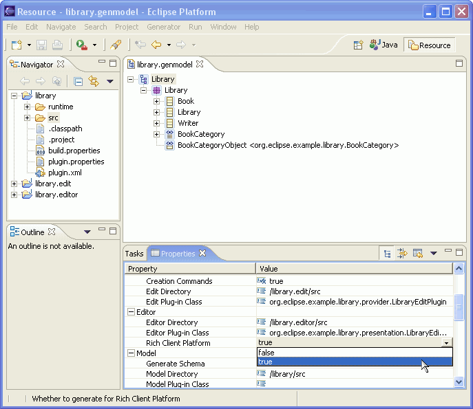

| Eclipse Corner Article |

Summary
This article explains how you can use EMF to generate RCP applications. It assumes that you have already used EMF, or have at least read the articles and references available on the documentation section of the EMF web site.By Marcelo Paternostro, IBM Toronto Lab
October 12, 2004
One of the greatest new features of Eclipse 3.0 is the support for Rich Client Platform (RCP) applications. Using Ed Burnette's words from his Rich Client Tutorial Part 1, "RCP is basically a refactoring of the fundamental parts of Eclipse's UI, allowing it to be used for non-IDE applications."
For both Eclipse and EMF, adding support for RCP applications was not trivial. Every class had to be inspected and any call to base plug-ins, such as org.eclipse.core.resources and org.eclipse.ui.ide, had to be carefully redesigned. Without these changes, any RCP application would crash due to multiple ClassNotFound exceptions -- probably not the desired behavior for the application.
In addition to carefully rewriting pieces of the code to make sure that calls to some platform plug-ins were guarded by conditional checks to verify whether a plug-in was loaded or not, the RCP work on EMF has also included the generation of a complete RCP application. After performing the steps described in this article, you will have an RCP application that is able to manipulate instances of your EMF model -- exactly as with ordinary EMF generated editors.
This article was written using the EMF 2.0 and XSD 2.0 release builds, which require Eclipse 3.0. You can download them here.
Usually, the first step to create an application using EMF is to define the model that describes the instances that will be manipulated by the application. This tutorial uses the library XML schema to create the ecore model for which code will be generated. If you need help performing any task below, consult the Generating an EMF Model using XML Schema (XSD) tutorial.
This is what you need to do:
If nothing went wrong, you are now looking at the Generator Model Editor for the library.genmodel file.
For EMF users everything has been pretty much the same until now. The first difference is here: in order to tell EMF that you want to create an RCP application, you need to set the Rich Client Platform property under the Editor category to true.

What you have done is set EMF to generate a full RCP application instead of generating only the editors and wizards to manipulate the instances of the ecore model. As indicated by the layout of the properties, the UI code -- usually located in the Editor plug-in -- is the only one affected when you choose RCP. This means that you will not have to change any lines in the Model and Edit code of your existing projects if you choose to deploy them as RCP applications.
Back to the normal EMF routine: you should now generate the code for your model, edit and editors. Make sure that you save the changes on the genmodel editor.
Because you told EMF to create an RCP application, some special elements were introduced in the Editor plug-in. Two of them are quite important. The first one is the definition of an Eclipse Application in the manifest file (plugin.xml), which is used to launch the generated RCP application.
<extension
point="org.eclipse.core.runtime.applications"
id="LibraryEditorAdvisorApplication">
<application>
<run
class="org.eclipse.example.library.presentation.LibraryEditorAdvisor$Application">
</run>
</application>
</extension>
The best definition of this extension point is provided by its documentation:
|
Platform runtime supports plug-ins which would like to declare main entry points. That is, programs which would like to run using the platform runtime but yet control all aspects of execution can declare themselves as an application. Declared applications can be run directly from the main platform launcher by specifying the -application argument where the parameter is the ID of an extension supplied to the applications extension point described here. This application is instantiated and run by the platform. Platform clients can also use the platform to look up and run multiple applications. |
There are a couple of other platform extension points in the manifest file that are only generated for RCP applications, such as the definition of a perspective and some menu actions. Since you have probably already used these extension points, I won't explain them here.
The second element worth mentioning is the class org.eclipse.example.library.presentation.LibraryEditorAdvisor.
Besides being responsible for defining the appearance of the RCP application
(features such as menus, status bar, and initial size), this class contains
the following inner classes:
Application |
This class implements the run method required by the org.eclipse.core.runtime.IPlatformRunnable interface, which is the first method executed when the RCP application is executed. |
Perspective |
The perspective defines the initial layout of the application. EMF's default setting is to present the Outline and Property views to the right of the editor area. |
| Menu actions | Each menu action defined in this class is an extension of org.eclipse.emf.common.ui.WorkbenchWindowActionDelegate created to perform a specific task such as opening a saved resource or creating a new one. |
Finally, it is worth highlighting one issue related to the usage of editors in RCP applications. As mentioned before, an RCP application should not use the Eclipse resources and IDE facilities; otherwise, it would be a full Eclipse application. That rules out using org.eclipse.ui.part.FileEditorInput as the input of an editor. Looking at the editor's generated code, you see that the expected input is an instance of org.eclipse.emf.common.ui.URIEditorInput, which is a simple wrapper for any org.eclipse.emf.common.util.URI that is used to locate an EMF resource.
Using Eclipse to launch an RCP application, you are basically launching a Run-time Workbench. Some extra steps are required to specify that you want to use the generated application instead of the default one (org.eclipse.ui.ide.workbench) and to make sure that only the appropriate plug-ins are loaded into the runtime.
The steps below will guide you through the process of creating the Run configuration:
You should also select the Clear workspace data before launching check box. An RCP application's workspace is usually only used to store application settings such as location and menu information.
As shown in the picture below, you can also define:
java.endorsed.dirs to avoid the Crimson
DOM problem described almost everywhere in the EMF site.-consoleLog that tells Eclipse
to output any error or warning to the Console view besides registering
it on the .metadata log file.

library.editor) from the list.
When Eclipse looks for the required plug-ins to run library.editor,
it also selects the optional dependencies declared by all the used plug-ins.
To ensure that the test will use only the minimum number of plug-ins, you
should uncheck:
You need to update this list every time you add a plug-in to the runtime.
Although it looks like a regular Eclipse application, this is an RCP application. It is able to manipulate instances of your model, serializing them in the file system without using Eclipse's repository.
If you forget to type the file extension, the application won't be able to locate the appropriate editor to manipulate your object and will display an error message.
This tutorial has shown how EMF can be used to create an RCP application to manipulate instances of your models and how you can configure Eclipse to test it. I recommend reading the articles mentioned below if you are considering going deeper into RCP and EMF. They cover many details that I have omitted.
RCP Tutorial Part 1
RCP Tutorial Part 2
RCP Tutorial Part 3
The Eclipse Modeling Framework Overview
Generating an EMF Model using XML Schema (XSD)
Java and all Java-based trademarks and logos are trademarks or registered trademarks of Sun Microsystems, Inc. in the United States, other countries, or both.
Microsoft and Windows are trademarks of Microsoft Corporation in the United States, other countries, or both.
Linux is a trademark of Linus Torvalds in the United States, other countries, or both.
Other company, product, and service names may be trademarks or service marks of others.